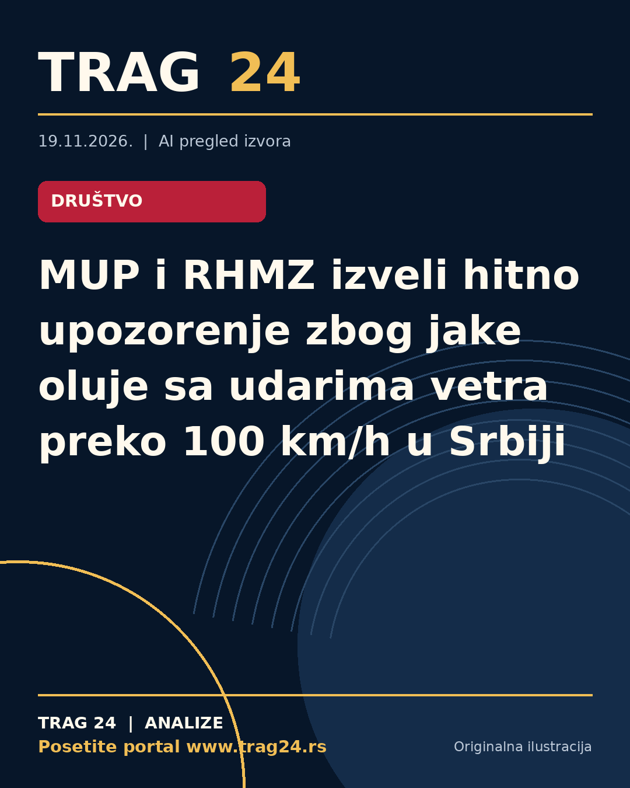

MUP i RHMZ izveli hitno upozorenje zbog jake oluje sa udarima vetra preko 100 km/h u Srbiji

ŠTA SE DOGODILO
Ministarstvo unutrašnjih poslova (MUP) Srbije, zajedno sa Republičkim hidrometeorološkim zavodom (RHMZ), izvelo je hitno upozorenje građanima zbog očekivane jake oluje praćene snažnim udarima vetra koji mogu prelaziti brzinu od 100 km/h. Kako se navodi, oluja je najavljena za veče i očekuje se pre svega na teritoriji Vojvodine i Beograda, kao i u zapadnoj i centralnoj Srbiji. Zbog nepovoljnih vremenskih uslova uveden je i sistem za prenos SMS hitnih informacija građanima.
HRONOLOGIJA
Tokom večeri, hladni front u zapadnoj visinskoj struji dovešće do pojave olujnih i orkanskih udara zapadnog i severozapadnog vetra. RHMZ je aktivirao sistemi za obaveštavanje putem SMS poruka, a MUP je izdao upozorenje građanima da izbegavaju kretanje i da budu posebno oprezni. Putevi Srbije su apelovali na vozače da prilagode brzinu i koriste zimsku opremu. Prethodnog dana u Beogradu je već bilo obilnih padavina koje su izazvale poplave u nižim delovima grada.
ŠTA NAVODE IZVORI
Nova.rs izveštava o meteorološkom upozorenju RHMZ i savetima MUP-a i Puteva Srbije da građani ostanu kod kuće i budu oprezni u saobraćaju. Telegraf navodi da je MUP poslao hitno SMS upozorenje o olujama i jakim naletima vetra, uz napomenu o aktiviranom crvenom meteo-alarmu za najugroženije oblasti. Kurir prenosi apel MUP-a da se izbegavaju putovanja tokom oluje zbog opasnosti po bezbednost ljudi i materijalnu štetu, uz dodatne preporuke o zabezbeđivanju predmeta na otvorenom.
ŠTA JE POTVRĐENO
Potvrđeno je da su u Srbiji tokom večeri najavljene oluje sa udarima vetra od 80 do preko 100 km/h, prvenstveno na području Beograda i Vojvodine. MUP je pokrenuo sistem za hitno slanje informacija građanima putem SMS poruka. Takođe, postoje saopštenja Puteva Srbije i sektora za vanredne situacije koji ukazuju na moguće probleme u saobraćaju i poremećaje u infrastrukturi, uključujući mogući nestanak struje i poremećaje u telekomunikacijama.
ŠTA NIJE POTVRĐENO
Nije dostupno zvanično izveštavanje o konkretnim posledicama oluje kao što su nastali materijalni kvarovi ili povrede. Nema potvrda o broju eventualno oštećenih objekata ili ugroženih lica, već samo upozorenja i preporuke za preventivne mere.
ŠTA OSTАJE OTVORENO: Ostaje neizvesno kakve će sve posledice oluja izazvati kada stigne, budući da još nema izveštaja sa terena nakon njenog prolaska. Takođe, nije poznato koliko dugo će trajati nepovoljni vremenski uslovi niti da li će uslediti nova upozorenja ili pojačani rizici.
Izvori
- https://nova.rs/magazin/vremenska-prognoza/izdato-hitno-upozorenje-gradjanima-stizu-sms-poruke-zbog-nadolazece-oluje/
- https://www.telegraf.rs/vesti/srbija/4435825-mup-poslao-hitno-sms-upozorenje
- https://www.kurir.rs/vesti/drustvo/10166537/apel-mup-a-izbegavajte-putovanje-tokom-oluje
Ova analiza je pripremljena uz pomoć veštačke inteligencije na osnovu javno dostupnih izvora. Navodi izvora nisu nužno nezavisno potvrđeni.